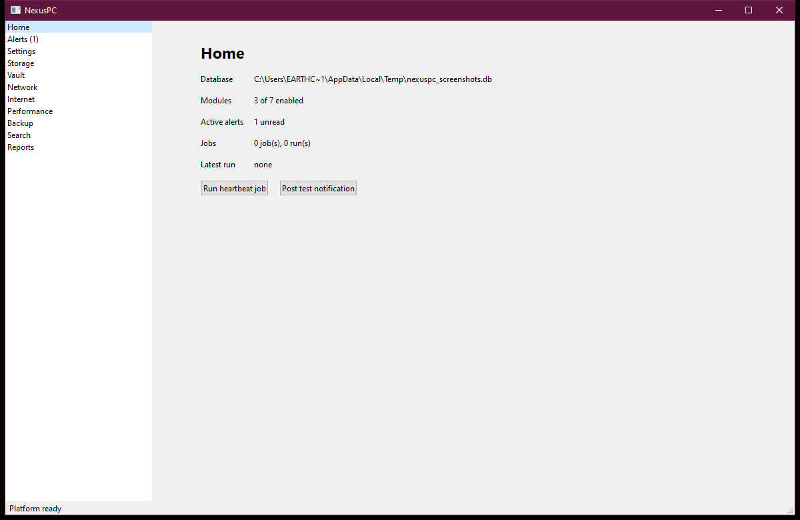

One app for the whole PC.
NexusPC brings the eight tools you'd otherwise run separately — duplicate cleanup, a password vault, network discovery, internet diagnostics, hardware health, backups, disaster-recovery readiness, and file search — into one app, one local database, nothing leaving your computer.
No account. No cloud sync. No subscription.

Home — every module, one glanceEverything one PC actually needs
Eight modules sharing one history instead of eight unrelated tools with none. Storage, Connectivity, and System Health are on by default — switch any module on or off in Settings.
Storage
Hashes cheap-to-expensive (size, then BLAKE3) to find duplicate files fast, and clears them to the Recycle Bin, not gone for good.
Vault
An encrypted password & notes vault that runs as its own process — no bug anywhere else in NexusPC has a code path to a decrypted entry.
Network
Scans a range you type in, resolves MAC addresses over ARP, and alerts the moment a known device goes offline.
Internet
Tracks DNS resolvers and a captive-portal check over time to tell “my PC”, “my router”, and “my ISP” apart.
Performance
Live CPU, memory, and process charts, sampled every few seconds, with threshold alerts the moment they're crossed.
Backup
Space-efficient snapshot backups with verify and restore — or a one-way Mirror sync when you just want a live copy on a second drive.
Search
Fast full-text search across the files you index, ranked with snippets, narrowed by extension or modified date.
Continuity
A real recovery-readiness score across four disaster scenarios, backed by actual restore rehearsals — not a simulated number.
Built so one bug can't reach everything
Every module — Storage, Network, Backup, Search and the rest — is independent, sharing one local database, job system and audit trail, so a crash in one doesn't take the app down. The Vault is the one deliberate exception.
- Its own process. nexuspc-vault.exe runs separately from the main app, spawned the first time you open the Vault page.
- Its own file. A standalone encrypted file, never a table in the shared database, unlocked with Argon2id and decrypted with XChaCha20-Poly1305.
- Locks itself. Automatically after 5 minutes idle, independent of whether the rest of NexusPC is even open.
See it running
Real screens from the desktop app, not mockups.
Nothing leaves your computer
No telemetry, no analytics, no crash reporting, no update checker phoning home. The only network traffic NexusPC ever generates is traffic you explicitly asked for.
No listener
NexusPC can't be reached from another computer, and nothing about it is remotely manageable.
You trigger every scan
Network discovery only ever walks a CIDR range you typed in yourself — never on its own initiative.
One folder, yours
Database, vault file, and reports live under one folder you can inspect or delete at any time.
Build it and run it
There's no published installer yet — building from source is the current path.
Install the prerequisites
VS 2022 Build Tools (C++ workload), CMake, Ninja, vcpkg, and Qt 6.8.3 — full versions and install commands are in docs/BUILDING.md.
Run get-started.bat
One script configures, builds, and launches NexusPC.
# from the repo root
get-started.bat
Optional: build the installer
Produces NexusPC-Setup-<version>.exe via Inno Setup — see packaging/windows/README.md.
cmake --preset windows-msvc cmake --build --preset release ISCC.exe packaging\windows\NexusPC.iss
There's no code-signing certificate yet, so Windows SmartScreen will warn on first run of the installer or the app. Not a sign of anything wrong — see the code signing policy for the plan to fix it.